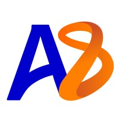

Vinayak Sharma
Hi there! I'm an incoming MS in Computer Science student at Columbia University and a recent Computer Science and Mathematics graduate from UC San Diego. I am interested in building AI systems that are useful, reliable, and safe in messy real-world settings, especially across agents, model evaluation, multimodal AI, simulation, and security-critical applications.
I've worked across AI research, applied machine learning, and production engineering at Scale AI, Articul8 AI, and MIT Lincoln Laboratory. At Scale AI, I worked on LLM evaluation, alignment, and failure-mode analysis to improve the reliability and safety of generative model outputs. At Articul8 AI, I built production GenAI agents and automation systems for enterprise workflows, turning complex business processes into AI tools that could execute reliably for a Fortune 500 client. At MIT Lincoln Laboratory, I worked on adversarial robustness for diffusion models, built a RAG system for generating speech text in a military radio communication digital twin, and helped develop SocialCipher, a multimodal threat detection framework that analyzes online content and surfaces structured risk signals for human analysts.
My research has also explored how AI systems interact with people, environments, and scientific problems. Previously, at the Qualcomm Institute, I built an LLM-powered NPC dialogue system for immersive environments, connecting real-time language generation with Unreal Engine based interaction. In the Toor Lab at UCSD, I worked on 3D RNA structure reconstruction using NVIDIA GET3D, exploring how generative models can support scientific discovery.
I care deeply about using technology to create meaningful real-world impact. As a developer and product manager at Triton Software Engineering, I helped build pro bono software for nonprofits, including tools supporting formerly incarcerated individuals, logistics workflows for farmers, and youth sports organizations. That experience shaped how I think about engineering. The best AI systems are not just technically impressive. They are reliable, usable, and grounded in the needs of real people.
My current interests include physical and embodied AI, AI agents, LLM evaluation and alignment, multimodal learning, model robustness, simulation, computer vision, natural language processing, and AI safety and cybersecurity.
Everything else: Outside of work, I like to play and teach guitar, play basketball, go to the gym, practice karate, and spend time outdoors hiking.

Updates
- Jun 2026 Graduated from UC San Diego with a BS in Computer Science & Mathematics! Starting my MS in Computer Science at Columbia University this fall.
- Jun 2025 Awarded the Gary Reynolds Scholarship and Provost Honors at UC San Diego
- Sep 2025 Joined the Qualcomm Institute as an Undergraduate Researcher, working on visual recognition and real-time feedback in immersive environments
- Sep 2025 Completed a GenAI Technical Advisor internship at Scale AI
- Sep 2025 Built AIbnb at HackMIT on the Y Combinator track — reinventing Airbnb with AI
- Jun 2025 Completed a Machine Learning Engineer internship at Articul8 AI, building table understanding pipelines and GenAI agents for enterprise clients
- May 2025 SocialCipher accepted at the IEEE Conference on Artificial Intelligence (CAI 2025)
- May 2024 Helped organize TritonHacks as External Events Coordinator — securing sponsors, workshops, and resources for a hackathon serving underserved high school students
- Jun 2024 AI Research Intern at MIT Lincoln Laboratory — developed RAG systems and the SocialCipher threat detection framework
- Feb 2023 Built Amabam at Stanford TreeHacks — a Duolingo-style gamified skill-learning app with AI pose feedback
Education

Columbia University, School of Engineering
MS in Computer Science (Incoming, Fall 2026)

University of California, San Diego
BS in Computer Science & Mathematics
Research: Toor Lab (3D RNA reconstruction), Qualcomm Institute (immersive HCI)
Activities: Triton Software Engineering, ACM at UCSD, Q-Lab, Intramural Basketball, Guitar Tutoring
Work Experience
Qualcomm Institute (Calit2), UC San Diego
Sep 2025 — Present- Built NPC dialogue pipeline with FastAPI, CouchDB, and Ollama for AI-powered generation and compliance checking.
- Integrated system into Unreal Engine via C++ components, enabling real-time API calls and bulk dialogue importing.
Scale AI
Sep 2025 — Dec 2025- Advised on GenAI technical strategy and evaluation methodologies for frontier model applications.

Articul8 AI
Jun 2025 — Sep 2025- Developed an AI pipeline for complex table understanding, combining DETR-based table detection, Camelot parsing, and LLM-driven JSON schema generation. Enhanced text-to-SQL accuracy to 95% using LLaMA few-shot learning and chain-of-thought prompting.
- Built and integrated a custom GenAI agent into Articul8's AgentMesh platform, achieving 100% functional parity with human performance for a Fortune 500 enterprise client. Paper
MIT Lincoln Laboratory
Jun 2024 — Aug 2024- Developed a RAG system and evaluated it end-to-end using RAGAS, Jaccard similarity, and manual reviews; experimented with chunking strategies, retrieval methods, embedding models, finetuning, prompt engineering, and reranking.
- Co-developed SocialCipher, a multimodal framework for proactive threat detection; selected in the top 12 (out of 40+) teams for poster presentation. Paper accepted at IEEE CAI 2025.
MIT Lincoln Laboratory
Jun 2023 — Sep 2023- Investigated adversarial attacks against AI diffusion models through FGSM and PGD attacks, optimized diffusion model generation via Progressive Distillation to improve robustness.
Projects
Papers
Community Engagement
External Events Coordinator, TritonHacks (CS foreach)
- Led a 6-person team to help run TritonHacks, a UCSD student-run hackathon for high school students from underserved and minority communities, focused on promoting equity and access to STEM education.
- Secured company sponsorships to fund the event, coordinated workshops and external programming, and helped ensure the hackathon came together end-to-end for participants.
Honors
- Gary Reynolds Scholarship, UC San Diego — Jun 2025
- Provost Honors, UC San Diego — Fall '23, Winter '24, Spring '24, Fall '24, Winter '25
- Commended Student, National Merit Scholarship Program (PSAT) — Oct 2021
- International Baccalaureate Diploma — 42/45 (May 2022)
- Cambridge International Certificate of Education with Distinction — Jun 2020
- Level 1 Award, Grade 3 Plectrum Guitar, Trinity College London — Oct 2019
Areas of Experience
Machine Learning, Natural Language Processing, Generative AI & Agents, Computer Vision, Deep Reinforcement Learning, Multimodal AI, RAG & Information Retrieval, AI Safety & Cybersecurity, Full-Stack Development, & Human-Computer Interaction.